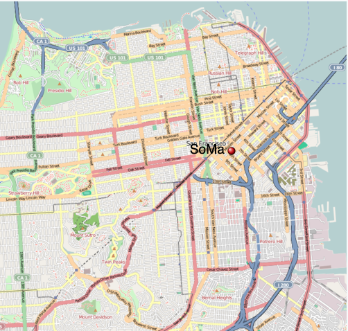

Response Time to Arrive on Scene
Kibeon Kim
Home
Response Time Dis.
Calls per Dis.
Num. of Alarms
Mean Response Time
Response Time Dist.
Prototypes
D&P
About
Response Time to Arrive on Scene
Bayview Hunters Point
Bernal Heights
Castro/Upper Market
Chinatown
Mission
Outer Richmond
 South of Market
Tenderloin
Western Addition
Lone Mountain/USF